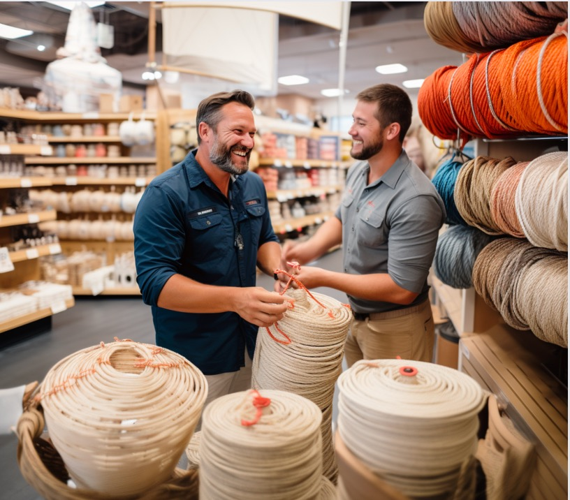

Avni Mohan
The product is custom baskets made out up-cycled sailing rope. The sail rope will either be brought by customer or the customer can choose the rope they want from collected rope from sailors. The rope will then be cleaned properly. Then the sailing rope will be knotted to make the baskets by machines in store, in addition, an inner lining could be added to the basket by recycling boat sails. Once the basket is made, the customer would come back to the store to pick up the basket
The main problem with sailing ropes is that they get worn and are deemed unsafe for sailing. However, this used rope is still very strong and can easily be up-cycled to create practical and useful storage option.
The concept store is the most important touchpoint of the customer experience. The store will have a sailing aesthetic to enhance the customer experience. Coming into the store will allow the customer to design their basket and customize it to their needs and aesthetic. The customers will be allowed to choose the dimensions, shape, and style of their basket. Either they could bring in their own materials, or they could choose from donated materials from other sailors. This makes the process of buying storage containers a more interactive experience.